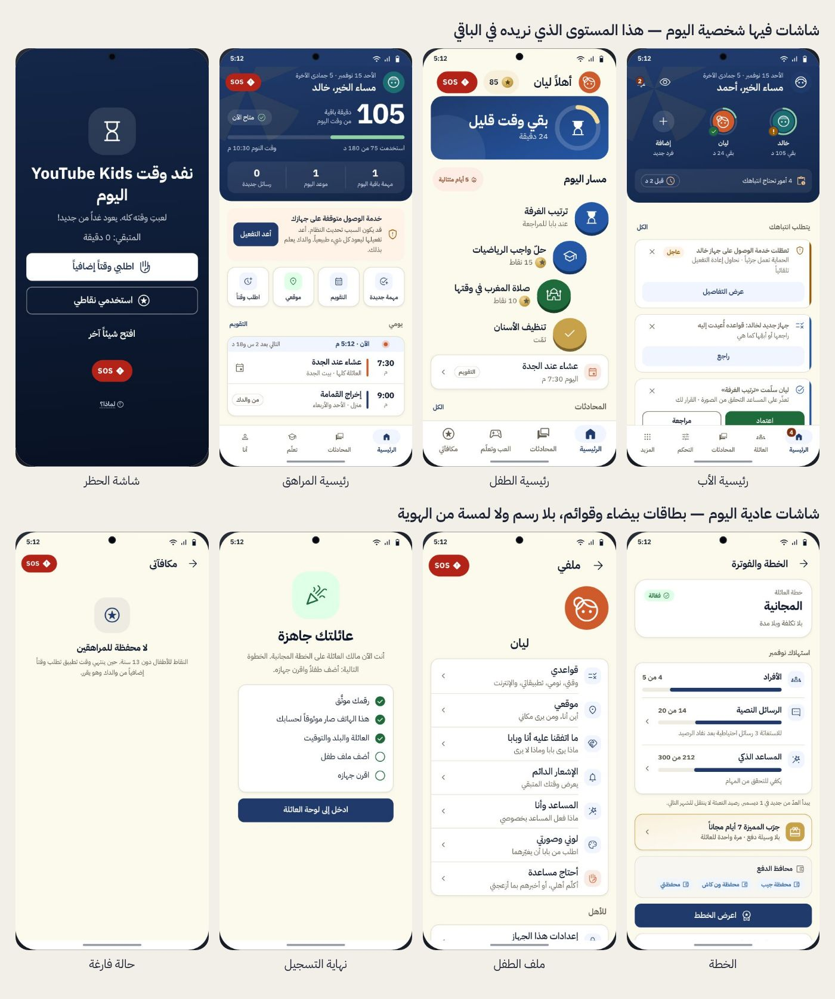

عيّنات الرسم — اختر واحدة
ثلاث عيّنات لرسم يظهر في الشاشات الفارغة ونهايات المسارات. الرسم نافذة قمرية، ودرجة ضوئها تقول حال الشاشة.
أ — النافذةب — الضوءج — النقش
١. الرسم وحده مكبّراً
كل صف عيّنة، وكل عمود حالة: لا شيء بعد، نجاح، غير متاح لك.

٢. الرسم داخل شاشات الهاتف
في كل صف: الشكل الحالي يميناً، ثم أ، ثم ب، ثم ج.

٣. لماذا هذا العمل: حال النموذج اليوم
الصف الأعلى شاشات فيها شخصية، والأسفل شاشات عادية نريد رفعها إلى المستوى نفسه.
